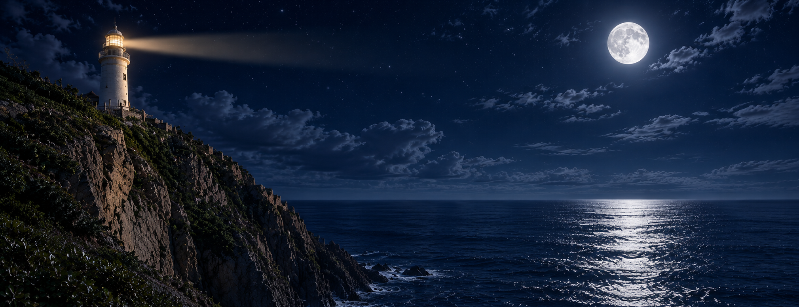
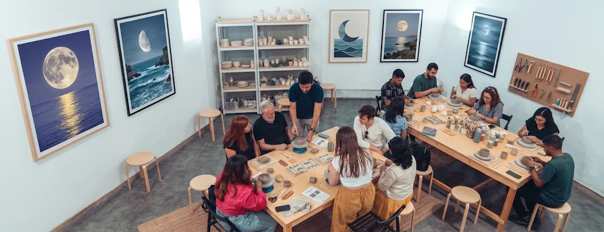
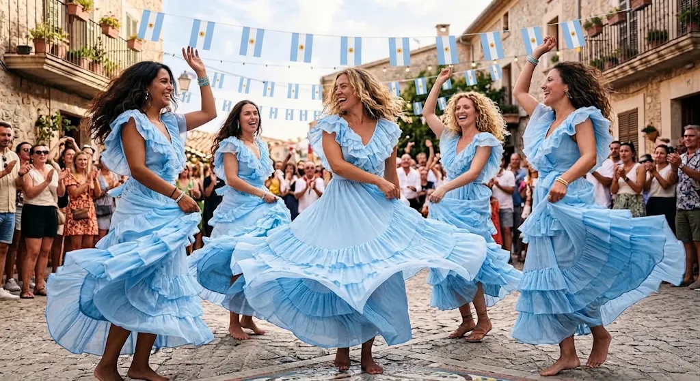
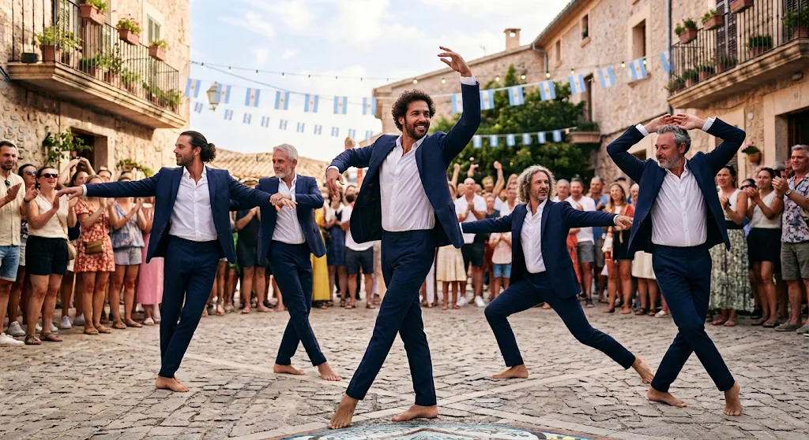

Acantilado de Lunaria

El bello acantilado con una de las mejores vistas en toda la argentina, pues según turistas "Es insuperable lo bella que es la luz de la luna al reflejarse en el mar desde este punto de vista"
Un lugar perfecto para vivir o visitar
Lunaria es una ciudad ubicada en la costa sur de Argentina, entre San Bernardo y San Clemente, contando
con todo tipo de ambientes que pueden ver en nuestro apartado de Lugares
Desde nuestro enorme bosque y centro histórico, donde conservamos antiguos edificios en el mejor estado
posible, a nuestro centro lleno de todo tipo de restaurantes, cafés, y espacios
dedicados al arte y la la cultura. Hay algo para todos, desde los más grandes a los más chicos.
Aquí en Lunaria nuestros habitantes han demostrado un amor considerable hacia la figura de la luna a lo
largo de nuestra historia, esto debido a
que en su fundación (La cual se explota más en el apartado de Ciudad ) se vieron cautivados por la maravillosa vista
del acantidalado de Lunaria, cuando la Luna llena se encontró con el mar, dando un paisaje brillante y
hermoso. Es quizás debido a esto que Lunaria es la ciudad con un número record en nombres relacionados
con el espacio
contando con muchas chicas llamadas Selene, por ejemplo, y varios varones con nombres como Orion, Leo,
etc.

El bello acantilado con una de las mejores vistas en toda la argentina, pues según turistas "Es insuperable lo bella que es la luz de la luna al reflejarse en el mar desde este punto de vista"

Uno de los lugares más populares de Lunaria, pues debido a la oscuridad que genera el bosque, con tantos árboles, y tan grandes, dan un ambiente muy oscuro, siendo esta la razón por la cual fue utilizado como escenario para la película de terror argentina "El bosque de la Noche del terror"

En esta ciudad el arte es uno de los campos más valorados, siendo esta la razón por la cual se invita desde los más pequeños hasta los más grandes a acercarse a los talleres de arte comunitarios donde tenemos material de arte, tanto puesto por la ciudad como donado por generosos contribuyentes. Y, a veces, se realizan eventos comunitarios para impulsar la creatividad en grupo

Uno de los eventos más pupulares, y más antiguos de Lunaria es el baile de las Doncellas de la Luna.
Evento en el cual, chicas vestidas de blanco bailan en la última noche de Luna llena del año, como
una
especie de despedida a la Luna. Este evento se remonta a fechas de la fundación del pueblo, donde,
fascinados por cuanto iluminaba la Luna al reflejarse en las olas del mar, sobre todo los días de
luna llena, Mujeres y hombres bailaban contentos.
Con el paso del tiempo, dicho evento fue perdiendo la novedad, y los habitantes de Lunaria dejaron
de festejarlo tan comunmente, pero para no perder la tradición se decidió que a fin de año se
crearían dos fiestas, El Baile de las Doncellas de la Luna, que, como se
mencionó antes ocurre en la última noche de Luna del año, y el Baile de Los Varones del Mar, que se
describirá un poco más adelante.
En este evento ocurre al anochecer, donde, luego de que las mujeres elegidas bailen con elegancia,
eligen a un varón u otra mujer en el público para que las acompañe en una pieza compartida, para que
este luego las pueda alzar
lo más alto posible hacia el cielo. Como este es un evento donde por lo general participan parejas
casadas o ya establecidas, se aprovecha para que las familias congenien en un tiempo de calidad.
Pero también participan mujeres
solteras que quieren tomar el valor para una declaración a algún hombre que les interese. Corre el
rumor que aquellas parejas que empiezan en este baile, y vuelven a participar en el Baile de los
Varones del Mar suelen durar mucho tiempo, en una relación próspera y sana.

Este evento nace como un complemento al Bailde de las Doncellas de la Luna, ocurriendo la primera
noche de Luna llena del año. Aquí empiezan donde todo terminó, con los varones, vestidos de trajes
azules (De preferencia relacionados con el mar),
alzan a las mujeres a la luz de la luna, bailan una pieza de vals, y luego los varones siguen por su
cuenta. Como una forma de darle la bienvenida de nuevo a La Luna.
A diferencia del Baile de las Doncellas, el Baile de los Varones nace no tanto de la idea de
festejar la a la Luna, si no que más bien también celebran al mar, que fue durante décadas el
principal ingreso económico que recibía la ciudad, que en sus inicios
comenzó principalmente como una ciudad pesquera, que luego poco a poco se pudo ir expandiendo, pero,
para no olvidar como creció la ciudad en un inicio se decidió crear este evento, combinándolo con el
baile de las doncellas.
Al igual que, en El Baile de Las Doncellas de La Luna, también se les da la oportunidad a los
varones que no estén en algún tipo de relación afectiva o romántica de elegir a alguien que baile
con ellos,
Ya sea hombre o mujer, aunque tienen que esperar todo el año para volver a repetir el baile, por lo
que no suele ser tan común el aprovechar un poco la oportunidad para declararse en este evento.